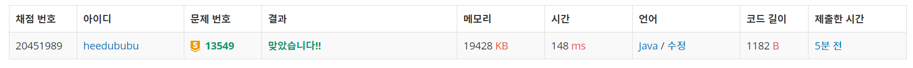

문제
https://www.acmicpc.net/problem/13549
( ᐛ )و 도전
1. 설계
- BFS를 이용하여 수빈이가 방문할 수 있는 곳들을 큐에 넣고 동생과 만날 때 까지의 최단거리를 탐색한다.
2. 구현 (성공 코드)
1
2
3
4
5
6
7
8
9
10
11
12
13
14
15
16
17
18
19
20
21
22
23
24
25
26
27
28
29
30
31
32
33
34
35
36
37
38
39
40
41
42
43
44
45
46
47
48
49
50
51
52
import java.util.Arrays;
import java.util.LinkedList;
import java.util.Queue;
import java.util.Scanner;
/**
* @author HEESOO
*
*/
public class Main {
public static int bfs(int n, int k) {
Queue<Integer> q=new LinkedList<>();
int[] visit=new int[100001];
Arrays.fill(visit, -1);
q.offer(n);
visit[n]=0;
while(!q.isEmpty()) {
int now=q.poll(); //내 위치
if(now==k) return visit[now]; // 동생 찾음
// 순간이동할 수 있는 곳 다 찾기
int temp=now*2;
while(temp<=100000 && visit[temp]==-1) {
visit[temp]=visit[now];
q.offer(temp);
temp*=2;
}
// 1초 후
if(0<=now-1 && visit[now-1]==-1) {
visit[now-1]=visit[now]+1;
q.offer(now-1);
}
if(now+1<=100000 && visit[now+1]==-1) {
visit[now+1]=visit[now]+1;
q.offer(now+1);
}
}
return 0;
}
public static void main(String[] args) {
// TODO Auto-generated method stub
Scanner scan=new Scanner(System.in);
int n=scan.nextInt();
int k=scan.nextInt();
System.out.println(bfs(n, k));
}
}
3. 결과
 성공٩(˘◊˘)۶
4. 설명
- BFS를 이용한다
- 최소 시간을 리턴해야하므로 BFS를 이용하여 n에서 k에 도착하는 최단 경로를 찾는다.
- visit[]는 방문한 노드를 체크하는 배열로, 인덱스는 수빈이의 위치, 해당 값은 그 노드에 방문했을 때의 시간을 뜻한다.
- 큐에는 내가 방문한 곳을 넣고, 그 위치가 k와 같다면 동생을 찾은 것이므로 해당 값을 리턴한다.
- x초 일 때, 순간 이동은 0초만에 2now로 방문할 수 있기 때문에 while문을 돌려 순간 이동 할 수 있는 곳들을 모두 찾은 후 큐에 넣는다. 순간 이동을 할 경우 최단 거리를 찾을 수 있을 가능성이 커지므로 now-1, now+1보다 먼저 넣어 빨리 탐색할 수 있는 우선순위를 준다.
- 이후 1초 후에 방문할 수 있는 now-1, now+1의 범위를 체크한 후 방문하지 않은 곳이르면 큐에 넣어 차후에 다시 확인할 수 있게 한다.